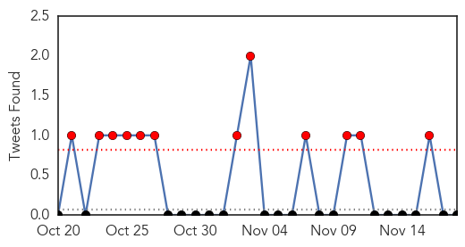

30 Day Trends
Web: 0 alerts, 0 warnings
Twitter: 12 alerts, 0 warnings
Top Articles:
- 1.000
- Zika Virus 101: One More Mosquito-Borne Disease To Worry About
- 0.999
- Dengue fever: Nine additional cases reported in Hawaii, How does this compare to previous outbreaks?
- 0.996
- Fears that Zika virus is causing deformities in babies as it spreads across South America
- 0.994
- 101 cases of dengue fever confirmed on Hawaii Island
- 0.987
- Mexico reports first imported Zika infection
- 0.980
- As chikungunya surges, Yucatan prepares for new zika virus
- 0.975
- Knowledge, Attitudes and Preventive Practices of Dengue Fever among Secondary School Students in Jazan, Saudi Arabia
- 0.970
- Sudan Vision Daily
- 0.963
- More hospitals capable of treating dengue
- 0.954
- 1359 mosquito breeding grounds from Western Province
- 0.940
- Mahidol University: Dengue fever vaccine expected in five years
- 0.935
- Thailand doctors call for more funds to find cure for dengue, news, Health News, AsiaOne YourHealth
- 0.934
- No respite from dengue in city
- 0.858
- Zika virus threatens to infect Caribbean tourism
- 0.714
- Epidemic threat looms in rain-affected areas of Tamil Nadu
- 0.578
- Private hospitals in state can’t deny treatment
- 0.563
- Dengue fight extends to schools; Insecticide will be sprayed in Hilo, Kona starting this weekend
Top Tweets:
-
No tweets found for Nov 18, 2015
Web/News Articles

Tweets
Article Locations

Article Confidences